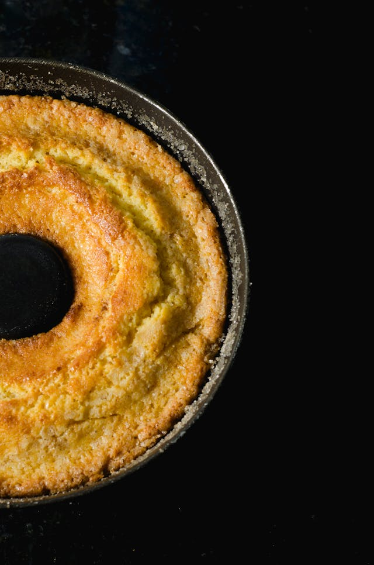

Receita de Bolo de Laranja

Receita de bolo de laranja sem lactose. O bolo permite você utilizar
ingredientes saudáveis, sem exagerar nas calorias ou no açúcar.
Ingredientes
- 1 e 1/2 xícara (chá) de farinha de trigo peneira
- 1/2 xícara (chá) de açúcar
- 1 xícara (chá) de suco de laranja natural
- 1/2 de xícara (chá) de óleo vegetal
- 2 colheres (sopa) de raspas de laranja
- 1 colher (sopa) de fermento em pó
Modo de Preparo
-
Para fazer o suco, corte as laranjas ao meio e esprema com as mãos ou no
escorredor. Depois, passe no coador para retirar as sementes e os
gominhos. Reserve - você deve fazer o suco na hora que for fazer o bolo.
-
Em uma tigela, coloque a farinha de trigo e o açúcar. Misture
rapidamente.
-
Adicione o óleo vegetal de sua preferência e o suco e as raspas de
laranja - eu utilizei azeite de oliva.
-
Com o auxílio de um fouet, misture bem, mas levemente, até formar uma
massa homogênea - o fouet ajuda a desfazer os gominhos da massa e evita
bolhas de ar.
-
Com um espátula, mexa novamente, raspando o fundo da tigela para
garantir que não há farinha grudada.
-
Adicione o fermento em pó e misture novamente até ficar homogêneo.
-
Unte uma assadeira como preferir e transfira toda a massa - eu passo um
pouco de manteiga ou margarina e salpico uma pitada de farinha.
-
Leve ao forno pré-aquecido a 180° C por cerca de 20 minutos, ou até o
bolo crescer e dourar - é importante ficar de olho, pois o tempo pode
variar de acordo com o forno.
-
Faça o teste do palito para saber se o bolo está no ponto. Insira um
palito no meio da massa. Se ficar massa grudada, precisa assar mais.
Mas, se sair sequinho, já está pronto.
- Espere o bolo esfriar e desenforme-o.
-
Você pode consumir o bolo assim mesmo, mas, se preferir, faça uma calda
de laranja!
Tabelas Informativas
Tabela 1
| Informação Nutricional - Porção de 1 fatia |
| Calorias |
155 kcal |
| Gorduras |
6,2 g |
| Carboidratos |
23,9 g |
| Proteínas |
1,6 g |
Tabela 2
| Informação Geral |
| Preparo |
20 minutos |
| Rendimento |
10 fatias |
| Dificuldade |
Fácil |